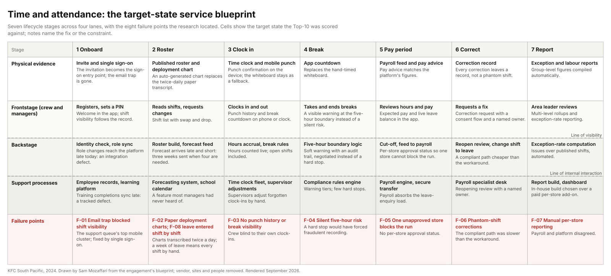

A software-as-a-service time and attendance platform spanning rostering, timekeeping, breaks, leave, compliance and the payroll feed, across equity and franchised restaurants. The business did not own it. The vendor released features on its own schedule; the business negotiated.
My roleOne of two experience designers running the review. Research, synthesis, the blueprint, the scoring workshop and the vendor reconciliation.
CollaboratorsPeople-systems, payroll and IT; restaurant managers, crew and area leaders as participants; a franchisee.
ConstraintsVendor roadmap outside our control. Forecast and role data arriving late from global systems. Payroll cycles and configurations that differ by franchise group by design.
Key decisionTreat the brief as an alignment problem, not a feature list. Build the instrument that lets priority disputes be settled by evidence: a blueprint that locates every pain point and a scoring model published before any score is written.
StatusFour-lane blueprint and scored top ten accepted for the vendor conversation. Release of individual items sat with the vendor; the blueprint was set up as a living document with half-yearly reviews.
{kind=link}

The problem
The platform had replaced a legacy time system and most managers preferred it; the mobile app in particular. But the business had accumulated a long backlog of wanted features across real-time data, mobile functionality and rostering flexibility, and nobody could rank it. Restaurant managers, payroll, IT and compliance each had a different list. The vendor kept releasing its own roadmap. A stakeholder-weighted prioritisation model built during implementation had been discarded. The visible ask was a system-improvement exercise: prioritise and implement critical fixes, reduce labour-cost inefficiency, mitigate compliance risk, reduce staff frustration and standardise across equity and franchise.
The people living with it said the real problem plainly: the biggest pain point was prioritising development across so many stakeholders. Underneath that, the compliance layer was quietly failing. Managers faced a warnings list so long they stopped reading it, and hard stops on common shift patterns pushed managers into recording things that were not true just to get a pay run through. The workarounds were physical: paper deployment charts transcribed twice a day, whiteboards above time clocks, spreadsheet rosters, printed break sheets, phantom shifts entered to unblock payroll.
Every recurring workaround was evidence of a missing feature, and without a shared way of ranking them the vendor conversation went nowhere. The cost was not only manager time; it was a compliance layer that people had learned to route around.
What I did
We designed the research to map the whole lifecycle rather than to collect complaints, and we triangulated four methods so no single voice could set the priority.
- Semi-structured interviews from crew through restaurant managers, area leaders, IT support, people-systems and payroll, across equity and franchised restaurants, plus an above-restaurant round with a franchisee and area leaders.
- A role-branched survey: one instrument, a role gate at the start, six branch paths. The area-leader and franchisee branches returned nothing, which we read as a sampling signal rather than a finding, and covered those roles by interview instead.
- Site visits and contextual inquiry across franchise and equity restaurants, watching the time clocks, the printed rosters, the deployment whiteboards and the laminated charts.
- A support-queue analysis of six months of mobile-app tickets to quantify failure demand.
Synthesis ran on a shared wall with client stakeholders while a spreadsheet kept the digital twin. The taxonomy was the load-bearing move: every pain point was tagged by solution type (technology, education, integration, process) and by backlog status (already planned, solvable but unplanned, outside platform scope). That one table showed at a glance which problems were the vendor's to solve, which were the business's, and which were nobody's because nobody had named them. Personas, two worked user journeys and the four-lane blueprint followed, and the engagement closed with a scoring workshop and a reconciliation pass against the vendor's release calendar.
What the research found
Alert fatigue, not non-compliance. The compliance warnings list was so overwhelming that managers dismissed warnings without investigation. That set the design philosophy for everything after: few hard stops, visible warnings everywhere else, with an audit trail.
Rules create their own workarounds. The swap-notice rule pushed crew to drop and re-pick shifts instead of swapping. Pay-period rigidity produced phantom shifts. A hard stop on breaks would have forced managers to record fraudulently. Each was a system-design decision before it was a behaviour problem.
A quarter of the problems were education, with no delivery vehicle. Feature availability varied store to store with no baseline; most managers had never heard of the school-calendar feature; report literacy was low. The blueprint named a gap the business had never named: there was no channel to deliver that education through.
Data credibility is a design surface. The payroll figures and the platform figures disagreed, and area leaders, payroll and managers all said so. We treated that as an experience problem to design for, not an IT complaint to forward.
Integration latency is structural. Forecasts arrived late and short. Role changes took days to reach the platform. Training completions synced late. These were consequences of who owned each system, and the integration strand of the blueprint is the one most reviews never draw.
Four decisions
These are the calls I would defend in an interview, with the alternative each rejected.
Treat the brief as an alignment problem, not a feature list
Evidence. The discarded weighting model; four functions with four lists; the vendor roadmap ruling by default; the stakeholders' own words about prioritising across so many people.
Alternative considered. A feature-fix campaign against the visible ask. Rejected because it would have shipped random improvements and left the stalemate intact.
What we did. Built the instrument that makes priority disputes resolvable by evidence: a blueprint that locates every pain point in the service, and a scoring model agreed before any score was written.
Compliance ranks first by standing rule; everything else is weighted and published
Evidence. The previous model had been thrown out because nobody could defend it. Compliance failures carried the highest cost and were the ones people were routing around.
Alternative considered. Let the vendor's release calendar set the order, or reinstate the old weights. Rejected: neither survives a challenge from the functions that lost.
What we did. Six criteria agreed in the workshop: compliance impact (ranks first, always), labour-cost accuracy, crew experience, manager time, feasibility, cost and effort. Every item cites its insight and evidence count; nothing enters the list without one.
A visible warning at the five-hour break boundary, not a hard stop
Evidence. Existing hard stops on common shift patterns were already forcing false records. The boundary risk sat across a very large number of rostered shifts.
Alternative considered. The hard stop the vendor had on its roadmap. Rejected and negotiated down: it would have handcuffed managers and produced fraudulent data, which is worse than a visible, audited risk.
What we did. Guided enforcement with visible warnings and an audit trail, quantified against the rostered shifts it protects. It became item one on the list.
Draw the blueprint's boundary at the manual adjustments
Evidence. Payroll cycles, reopening policies and leave handling differed by franchise group, and only the enterprise-agreement interpretation was uniform.
Alternative considered. One configuration imposed across the network. Rejected: it would have blocked the blueprint on franchise politics and misrepresented how the service works.
What we did. A standard feature list per restaurant and a deliberate variant tail. The blueprint ends where franchise autonomy begins, and says so.
What was delivered
The scored top ten, with the design principle and backlog status each item carried into the vendor conversation. Items already on the vendor's calendar were adopted and fast-tracked; unplanned items were negotiated; one sat outside the platform's scope and became a business process.
| # | Item | Principle | Backlog status |
|---|---|---|---|
| 1 | Visible warning at the five-hour break boundary, not a hard stop | Few hard stops, visible warnings | Already planned |
| 2 | Guided break enforcement for shift supervisors | Few hard stops, visible warnings | Already planned |
| 3 | Time-off shift history | Crew can see their own record | Already planned |
| 4 | Shared-employee punches and leave in one view | One view per person | Solvable, unplanned |
| 5 | Manager break auto-wizard | Remove a workaround | Solvable, unplanned |
| 6 | Reporting at multiple levels with exception rate | One view per person | Solvable, unplanned |
| 7 | Leave shifts on the mobile shift list | Crew can see their own record | Solvable, unplanned |
| 8 | Auto-populated leave on schedules | Remove a workaround | Solvable, unplanned |
| 9 | Change a shift to a leave shift | Remove a workaround | Solvable, unplanned |
| 10 | Consent workflow for leave | Remove a workaround | Outside platform scope |
Alongside it: the pain-point register tagged by solution type and backlog status, personas for crew, rostering manager, area leader and payroll specialist, two worked journeys (roster to clock to pay), a reconciliation table against the vendor's release calendar with the business position on each vendor item, a release-communication template routed through the platform user group and franchise channels, and the blueprint below as a living document.
| Stage / lane | 1 · Onboard | 2 · Roster | 3 · Clock in | 4 · Break | 5 · Pay period | 6 · Correct | 7 · Report |
|---|---|---|---|---|---|---|---|
| Physical evidence | Invite + single sign-onThe invitation is now the single sign-on entry point; the email trap is gone. | Published roster + deployment chartAuto-generated deployment chart replaces the twice-daily paper transcript. | Time clock + mobile punchPunch confirmation on the device; the whiteboard remains as a fallback. | Whiteboard / app countdownApp countdown replaces the hand-timed whiteboard. | Payroll feed + pay advicePay advice reflects the platform’s figures: the credibility fix. | Correction recordEvery correction leaves a record, not a phantom shift. | Exception report, labour reportGroup-level figures compiled automatically, not per store by hand. |
| Frontstage | Registers, sets PINWelcome in the app; shift visibility follows the employee record. | Reads shifts, requests changesShift list with swap and drop; the auto-generated deployment chart replaces the paper transcript. | Clocks in / outPunch confirmation and break countdown on phone or time clock; punch history visible. | Takes and ends breaksVisible break warnings at the five-hour boundary instead of a silent risk. | Reviews hours and payExpected pay and live leave balance in the app, not only at the pay run. | Requests a fixCorrection request with a consent flow and a named review owner. | Area leader reviewsMulti-level rollups and exception-rate reporting instead of per-store manual compilation. |
| Backstage | Identity check, role syncRole changes reach the platform in up to two weeks today: a first-class integration defect. | Roster build, forecast feedForecast arrives with a two-hour delay; three weeks are sent when four are needed. | Hours accrual, break rulesHours counted live; open shifts included in the count. | Five-hour boundary logic, exception checksSoft warning with an audit trail: the compromise protecting 100,000+ shifts. | Cut-off, feed to payroll enginePer-store approval status so one unapproved store cannot block the run. | Reopen review, change-shift-to-leaveA compliant correction path cheaper than the phantom-shift workaround. | Exception-rate computationIssues ÷ published shifts: the area leader’s manual spot-check, automated. |
| Support processes | Employee records, learning platformTraining completions sync late: a tracked integration defect. | Forecasting system, school calendarThe school calendar feature exists but most managers have never heard of it (education strand). | Time clock fleet, supervisor adjustments16 of 17 supervisors adjust forgotten clock-ins: a process support gap. | Compliance rules engineWarning tiers; few hard stops, visa caps being one. | Payroll engine, secure file transferPayroll absorbs the leave-enquiry load: the leave hole’s backstage cost. | Payroll specialist deskReopening review with a named owner and target turnaround. | Report build, dashboardIn-house report build chosen over a paid per-store add-on. |
| Failure points | F-01 Email trap blocked shift visibilityThe support queue’s top mobile cluster for six months; fixed by single sign-on. | F-02 Paper deployment charts · F-08 Leave entered shift by shiftCharts transcribed twice a day; a week of leave means hand-entering every shift. | F-03 No punch history or break visibilityCrew blind to their own clock-ins; supervisors self-adjust. | F-04 Silent five-hour risk100,000+ rostered shifts at the boundary; a hard stop would have forced fraudulent recording. | F-05 One unapproved store blocks the runNo per-store approval status on the payroll feed. | F-06 Phantom-shift correctionsThe compliant path is slower than the workaround: redesign the compliant path. | F-07 Manual per-store reportingGroup-level figures compiled by hand; payroll and platform disagree. |
Working files from the engagement, anonymised: the engagement brief, interview synthesis, personas, journey map, blueprint and proposals.
How it would be measured
The engagement designed its measurement at the end rather than at the start, and the record does not hold post-implementation figures. This is the frame, stated so the next review starts from it.
Every crew member paid accurately, on time, first time, without anyone breaking a rule to get there.
DriversData freshness (age of labour figures); correction volume (phantom shifts, reopen requests); manual leave entries; crew self-service adoption; exception rate (compliance issues over published shifts, the area leader's manual spot-check automated).
LaggingSupport-ticket volume; payroll query load; compliance exceptions; manager hours on administration.
BaselinesThe support-queue analysis (mobile-app tickets over six months) and the pain-point register are the baselines that exist. Labour-figure age and correction volume need a baseline pulled before the next release.
CadenceHalf-yearly review of the blueprint and the list, per the living-document charter.
What I would do differently: build the measurement instrument in week one, name the education delivery vehicle in the roadmap rather than in a footnote, and baseline the service against a published standard before the first workshop.
The engagement, for a consulting reader
The people-systems function, with payroll and IT as co-owners of the outcome.
Scope inThe end-to-end time and attendance service from restaurant floor to payroll: onboarding and access, rostering, timekeeping, breaks, leave, compliance and the payroll feed, across seven stages and four lanes.
Scope outThe payroll engine's internals beyond the feed, pay architecture, and any single configuration imposed on franchise groups.
Decisions requestedAdopt the scoring model as the standing prioritisation method; accept the top ten as the negotiating position; fund the in-house report build over the paid per-store add-on; establish the half-yearly review.
Timeline and gatesTwenty-four weeks: research (weeks 1 to 8), synthesis (8 to 12), mapping (12 to 16), prioritisation and reconciliation (16 to 24). Each phase closed with a stakeholder review before the next began.
StakeholdersRestaurant managers, crew, area leaders, a franchisee, IT support, people-systems, payroll, compliance, and the vendor's account and product teams.
Risks managedVendor roadmap outside our control (mitigated by reconciliation and joint acceptance); franchise autonomy (mitigated by the variant tail); survey non-response from senior roles (covered by interview); data credibility disputes (treated as a design surface).
What AI did and what stayed human
Fieldwork stayed human: consent, rapport, and the trust needed to hear about phantom-shift payroll fixes are not delegable, and neither is walking the restaurant floor instead of trusting the ticket queue. After the recording, AI helped: transcripts into structured write-ups on a standard template, and open-text survey answers and interview notes extracted into the pain-point schema for the triage sheet. Every extracted row was checked against its source before it counted, and ambiguous ones went to an orphans list rather than into the register. The wall synthesis, the taxonomy, the scoring criteria and every negotiation with the vendor were people's work.